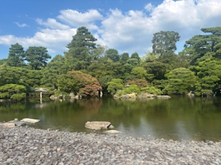
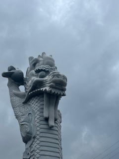
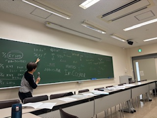

This gallery is a collection of places I’ve traveled to and hobbies I enjoy.
Travel

Kyoto garden

A cool guy from OkinawaView from Hiezan
Hobbies

Picture from a Japanese class while studying abroadI sometimes take picturesI like to draw sometimes. I made this fella. CatbirdBonus. My cat george helping me win in League